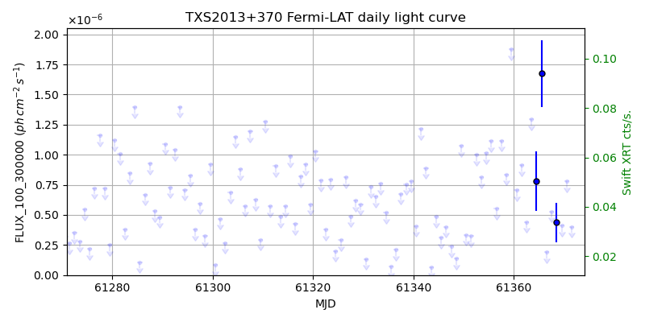
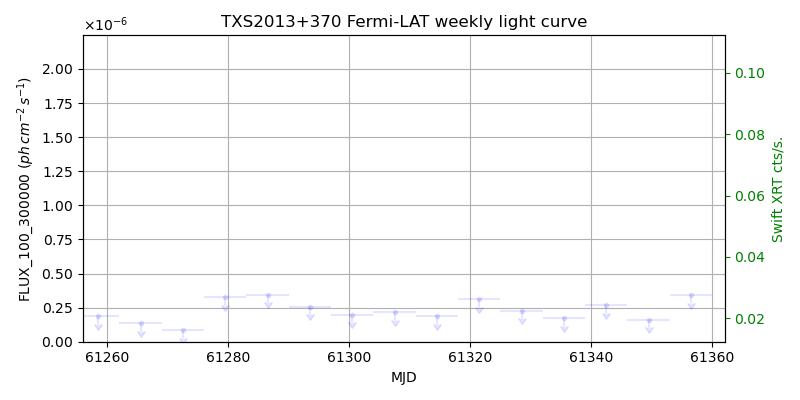
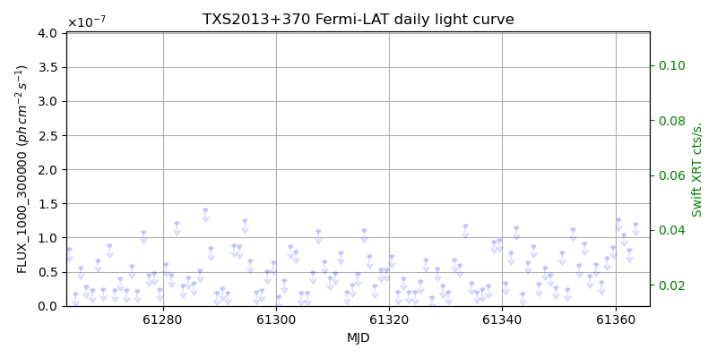
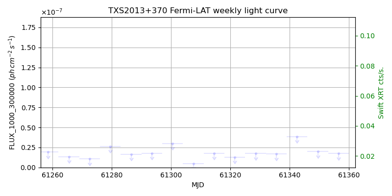

LAT Lightcurve site: https://fermi.gsfc.nasa.gov/ssc/data/access/lat/msl_lc/source/TXS_2013p370
Swift site: https://www.swift.psu.edu/monitoring/source.php?source=TXS2013+370
NED: Query
Time of last update of this page: UT: 2026-11-20 16:27 (MJD: 61364.686)
| Property | Value |
|---|---|
| R.A. | 20:15:28.80 |
| Dec. | 37:10:58.8 |
| z | 0.858 |
| 3FGL SpectrumType | |
| 3FGL PL Index | -1.00 |
| 3FGL Flux_100_300000 | -1.00e+00 |
| 3FGL Flux_1000_300000 | -1.00e+00 |
| 3FGL Flux >200 GeV | -1.00e+00 |
| 3FGL Extrap. Crab >200 GeV | -1.00 |
| 3FGL Flux After EBL Absorption >200GeV | -1.00e+00 |
| 3FGL EBL Crab Fraction >200GeV | -1.00 |

| MJD | dMJD | Flux | dFlux | Frac3FGL | FracCrab>200GeV | EBLFracCrab>200GeV |
|---|---|---|---|---|---|---|
| 61359.50 | 0.50 | 1.87e-06 | 0.00e+00 | 0.00 | 0.00 | -0.00 |
| 61360.50 | 0.50 | 7.05e-07 | 0.00e+00 | 0.00 | 0.00 | -0.00 |
| 61361.50 | 0.50 | 9.12e-07 | 0.00e+00 | 0.00 | 0.00 | -0.00 |
| 61362.50 | 0.50 | 4.41e-07 | 0.00e+00 | 0.00 | 0.00 | -0.00 |
| 61363.50 | 0.50 | 1.29e-06 | 0.00e+00 | 0.00 | 0.00 | -0.00 |

| MJD | dMJD | Flux | dFlux | Frac3FGL | FracCrab>200GeV | EBLFracCrab>200GeV |
|---|---|---|---|---|---|---|
| 61328.50 | 3.50 | 2.28e-07 | 0.00e+00 | 0.00 | 0.00 | -0.00 |
| 61335.50 | 3.50 | 1.73e-07 | 0.00e+00 | 0.00 | 0.00 | -0.00 |
| 61342.50 | 3.50 | 2.68e-07 | 0.00e+00 | 0.00 | 0.00 | -0.00 |
| 61349.50 | 3.50 | 1.62e-07 | 0.00e+00 | 0.00 | 0.00 | -0.00 |
| 61356.50 | 3.50 | 3.42e-07 | 0.00e+00 | 0.00 | 0.00 | -0.00 |

| MJD | dMJD | Flux | dFlux | Frac3FGL | FracCrab>200GeV | EBLFracCrab>200GeV |
|---|---|---|---|---|---|---|
| 61359.50 | 0.50 | 8.67e-08 | 0.00e+00 | 0.00 | 0.00 | -0.00 |
| 61360.50 | 0.50 | 1.27e-07 | 0.00e+00 | 0.00 | 0.00 | -0.00 |
| 61361.50 | 0.50 | 1.05e-07 | 0.00e+00 | 0.00 | 0.00 | -0.00 |
| 61362.50 | 0.50 | 8.22e-08 | 0.00e+00 | 0.00 | 0.00 | -0.00 |
| 61363.50 | 0.50 | 1.21e-07 | 0.00e+00 | 0.00 | 0.00 | -0.00 |

| MJD | dMJD | Flux | dFlux | Frac3FGL | FracCrab>200GeV | EBLFracCrab>200GeV |
|---|---|---|---|---|---|---|
| 61328.50 | 3.50 | 1.76e-08 | 0.00e+00 | 0.00 | 0.00 | -0.00 |
| 61335.50 | 3.50 | 1.67e-08 | 0.00e+00 | 0.00 | 0.00 | -0.00 |
| 61342.50 | 3.50 | 3.86e-08 | 0.00e+00 | 0.00 | 0.00 | -0.00 |
| 61349.50 | 3.50 | 2.00e-08 | 0.00e+00 | 0.00 | 0.00 | -0.00 |
| 61356.50 | 3.50 | 1.76e-08 | 0.00e+00 | 0.00 | 0.00 | -0.00 |
--------------------------------------------------------- Using user-supplied coords: 20:15:28.80 37:10:58.8 2000 --------------------------------------------------------- FLWO UT night of: 2026-11-21 Local Sid. @ Midnight: 03:37 Sunset (-15.0) (local, UT): 18:33 01:33 Sunrise (-15.0) (local, UT): 05:47 12:47 Moonrise (local, UT): Moonset (local, UT): 03:40 10:40 Moon phase: 0.85 --------------------------------------------------------- AzTime LSID UT Obj_el Obj_az Mn_el Mn_az Sep. --------------------------------------------------------- 18:33 22:09 01:33 66.2 291.4 47.9 117.4 65.8 19:03 22:39 02:03 60.3 290.8 53.3 125.0 65.9 19:33 23:09 02:33 54.3 291.1 58.2 134.7 65.9 20:03 23:39 03:03 48.3 292.2 62.3 146.9 66.0 20:33 00:09 03:33 42.4 293.6 65.1 162.1 66.0 21:03 00:39 04:03 36.6 295.3 66.3 179.7 66.1 21:33 01:09 04:33 30.9 297.4 65.4 197.5 66.1 22:03 01:39 05:03 25.3 299.7 62.9 213.2 66.1 22:33 02:09 05:33 19.8 302.3 59.0 225.9 66.2 23:03 02:39 06:03 14.5 305.2 54.2 235.9 66.2 23:33 03:09 06:33 9.4 308.3 48.9 243.9 66.3 00:03 03:39 07:03 4.6 311.8 43.2 250.4 66.4 00:33 04:10 07:33 0.3 315.6 37.3 255.9 66.5 01:03 04:40 08:03 -3.2 319.7 31.2 260.7 66.5 01:33 05:10 08:33 -8.5 324.3 25.1 265.1 66.6 02:03 05:40 09:03 -12.0 329.2 19.0 269.2 66.7 02:33 06:10 09:33 -15.0 334.5 12.9 273.0 66.9 03:03 06:40 10:03 -17.5 340.2 6.8 276.9 67.0 03:33 07:10 10:33 -19.4 346.2 1.0 280.7 67.1 04:03 07:40 11:03 -20.5 352.4 -4.9 284.7 67.3 04:33 08:10 11:33 -21.0 358.8 -11.1 288.8 67.5 05:03 08:40 12:03 -20.8 5.2 -16.8 293.2 67.6 05:33 09:10 12:33 -19.9 11.5 -22.3 298.1 67.8 05:47 09:25 12:47 -19.2 14.4 -24.8 300.5 67.9 --------------------------------------------------------- Dark hours >55 deg.: 0.00